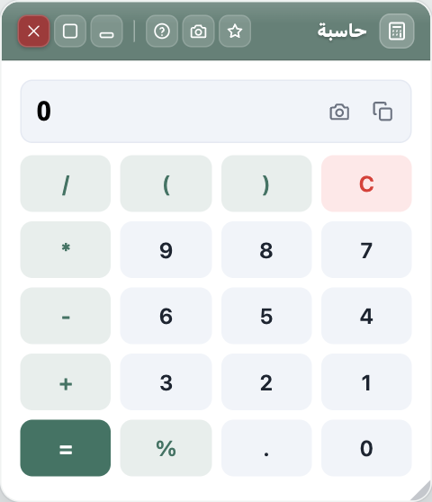

كيف تختار أدواتك في المتصفح؟
يقضي كثيرٌ منّا ساعات يومه داخل المتصفح: بريد، ومستندات، واجتماعات، وبحث. ومع كل مهمّة صغيرة نفتح موقعاً جديداً — حاسبة هنا، ومحوّل صور هناك، ومترجم في تبويب ثالث. هذه المقالة نموذج تجرّب عليه أدوات الصفحة: احفظها، أو ترجمها، أو غيّر طريقة عرضها.
١. اجمع ما تكرّره في مكان واحد
كل أداة تستعملها أكثر من مرّة في الأسبوع تستحق أن تكون على بعد نقرة. الشريط على حافة الشاشة يختصر البحث عن الموقع المناسب، ويبقي بياناتك على جهازك.

٢. انتبه للخصوصية
اختر أدوات تعمل على جهازك قدر الإمكان، ولا ترسل نصوصك أو صورك إلى خادم لا تعرفه. وحين تحتاج الشبكة — كأسعار العملات أو مواقيت الصلاة — اعرف لماذا ومتى.
٣. قِس قبل أن تحكم
الأداة الجيدة تخبرك بما فعلت: كم صورة ضغطت، وكم وفّرت من الحجم، وما الذي لم تستطع فعله ولماذا.
An English paragraph for the translator and the reading tools: good tools tell you what they did, what they saved, and what they could not do — and why.